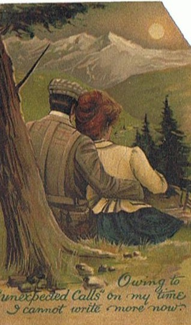

Thursday, March the 31th, 2011
back to: title, date or indexes
Thanks to Backwatersman, a “sort of Edwardian Out of Office Assistant”. In future I shall deploy this at such times as the cranial integuments get clogged up with dust and cobwebs and the Muse flees o'er hill and dale—in other words, when I am felled by vacancy-between-the-ears syndrome. If all goes well you should not see it too often.

Hooting Yard on the Air, January the 27th, 2011 : “Git On Drayhorse” (starts around 11:04)